Technical art highlights
- Materials: master / instance contract, grouped designer parameters
- Translucent Substrate tear material driven by baked mesh data
- Two editor tools in a project plugin: build from spline, bake onto mesh
- Destruction pipeline for Houdini Apprentice: OBJ + JSON → Python → Blender → Unreal
- Bullet glass fracture with a timed release wave, verified to 0.001 mm
- Walkable impossible piano staircase: VEX collapse, HLSL dissolve, per-step notes
01Overview
Headspace is a narrative game in Unreal Engine 5.8, built by a 14-person team for USC’s CTIN 594 studio. The player follows Mia through the inside of her own mind: the game opens by walking out of an eye along a path of tears, and each act ends with a memory breaking apart.
I am the team’s technical artist, responsible for two areas: materials, hand-authored and designer-tunable, with the editor tools that feed them, starting with the tear path; and a destruction system that turns Houdini simulations into moments Unreal can play back cheaply, starting with a shattering screen and a collapsing piano staircase.
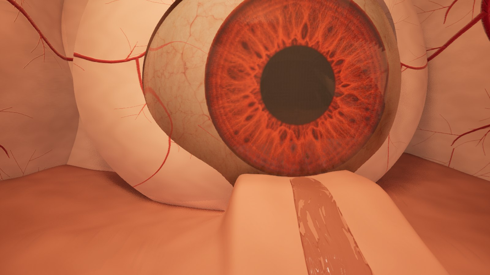
The entrance. The player starts at the foot of the eye and follows the tear path out into the headspace." width="1600" height="900" loading="lazy">In active development: more materials and the Act 3 destruction are in progress. Characters and the eye are placeholders from the team’s art pipeline.
02Material · Tear path
Every material I build for the project follows the same contract: one master material holds all the logic, instances hold all the look, meshes carry whatever data the shader needs, and an editor tool produces that data so nobody bakes it by hand. The tear path is the first material built this way.
The tears had to read as liquid from any distance, run downhill, bead on the steep cheek, fall off the edge as a waterfall and ripple when the player steps in them, all without a fluid simulation.
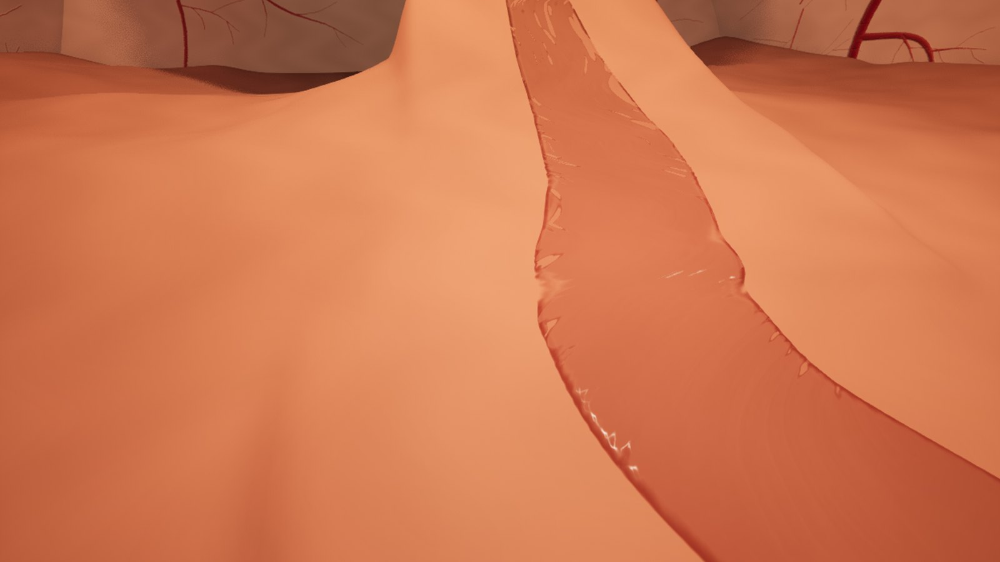
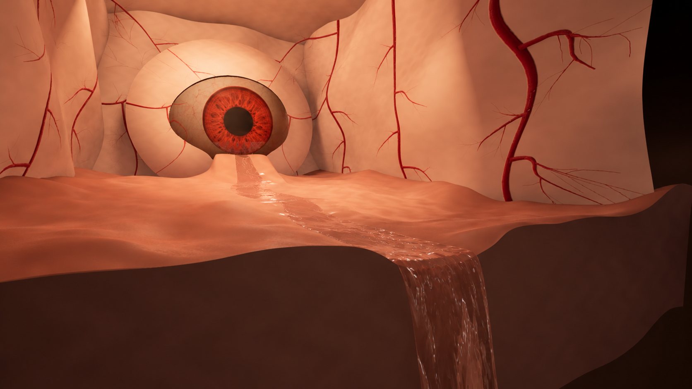
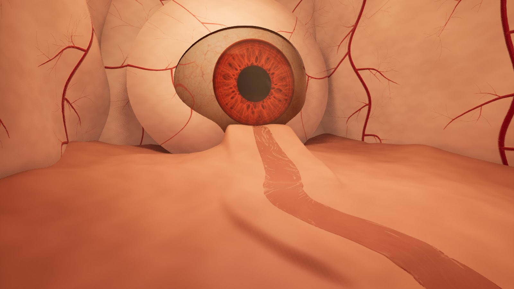
The master material
M_TearPath_Tear is a translucent Substrate slab using coloured transmittance: light passing through deep water picks up a red tint, thin water stays clear. The graph is built from nine small HLSL custom nodes, one per physical property, so each part can be read, tested and reused on its own. Read left to right:
// TearFilm_Waves (excerpt). One custom node:
// returns float4(dh/dx, dh/dy, ring energy, bead mask)
// soft expanding ring: height + radial derivative, fading with age
float2 ring(float r, float age, float spd, float lam, float life) {
if (age <= 0.0 || age >= life) return float2(0, 0);
float front = spd * age; float w = lam * (0.8 + 0.9 * age);
float x = r - front; float env = exp(-(x * x) / (w * w));
float a = 1.0 - age / life; a *= a;
a *= 1.0 / (1.0 + front * 0.035) * smoothstep(0.0, 0.025, age);
float k = 6.2831853 / lam; float s = sin(k * x); float c = cos(k * x);
return float2(env * s * a,
(env * k * c + s * env * (-2.0 * x / (w * w))) * a);
}
// 1) two-phase flow map: two copies of the wave field,
// offset by half a cycle and cross-faded, so it never smears
float ph0 = frac(Tm / FlowCycle); float ph1 = frac(Tm / FlowCycle + 0.5);
float w0 = 1.0 - abs(1.0 - 2.0 * ph0);
float2 vel = dir * spd * FlowSpeed; // dir, spd from UV0
// 3) footstep ripples from the parameter collection,
// only on the path, never on the waterfall
float4 cs[4] = { C0, C1, C2, C3 };
for (int i = 0; i < 4; i++) {
float age = CC - cs[i].w;
float2 dv = RealP.xy - cs[i].xy; float r = length(dv) + 0.001;
float zk = (1.0 - smoothstep(12.0, 28.0, abs(RealP.z - cs[i].z)))
* (1.0 - VC.b);
float2 rw = ring(r, age, RippleSpeed, RippleWavelength, RippleLife);
g += (dv / r) * rw.y * RippleHeight * zk;
}
// TearFilm_Transmittance: shallow stays clear, deep takes the tint
float d = UV1.x * 10.0;
return lerp(float3(1, 1, 1), Tint, saturate(d / TintDepth));
// TearFilm_RefractionByCoverage: no distortion where there is no water
return lerp(1.0, IOR, saturate(Cov * 2.0));
Designing the parameters
I designed the parameters for the people who would tune them, not for the graph. They sit in six numbered groups ordered by what you are trying to change, every value is in real units (centimetres, seconds), and each group has one main knob that does most of the work. The table shows the master defaults next to the red instance used in game, so you can see which values the look actually moves:
| Parameter | Master | MI_Red | What it does |
|---|---|---|---|
| 1 · Flow | |||
| FlowSpeed | 16 | 38 | How fast the surface pattern travels along the path (cm/s) |
| FlowCycle | 3 | 2.2 | Length of one flow-map loop (s); 2–4 avoids pulsing and smearing |
| FlowTiling | 38 | 38 | Size of the wave pattern (cm) |
| Stretch | 0.42 | 0.30 | Elongation along the flow; lower = longer streaks |
| FlowHeight | 0.9 | 1.1 | Strength of the flow waves: calm vs. lively |
| FallBoost | 1.5 | 1.5 | Extra wave strength on steep sections |
| NormalStrength | 12 | 6 | Overall bumpiness; lower = glassier |
| 2 · Tear Beads | |||
| BeadSpacing | 34 | 34 | Spacing of bead lanes (cm) |
| BeadSpeed | 28 | 28 | Slide speed (cm/s), randomised per lane |
| BeadDensity | 0.45 | 0.12 | Fraction of slots holding a bead; 0 = none |
| BeadSize | 2.4 | 2.4 | Bead radius (cm) |
| BeadHeight | 0.10 | 0.035 | Bead bump strength |
| 3 · Ripples | |||
| RippleSpeed | 16 | 22 | Ring expansion (cm/s) |
| RippleWavelength | 7 | 6 | Ring spacing (cm) |
| RippleLife | 4 | 0.8 | How long a ring lasts (s) |
| RippleHeight | 0.04 | 0.14 | Footstep visibility |
| 4 · Ambient Drops | |||
| DripCell | 110 | 110 | Grid size for drop placement (cm) |
| DripInterval | 6.5 | 6.5 | Average seconds between drops per cell |
| DripDensity | 0.35 | 0.15 | Fraction of cells that drip; 0 = off |
| DripHeight | 0.03 | 0.012 | Drop-ring strength |
| 5 · Look | |||
| Opacity | 0.85 | 0.5 | Base coverage of the film: transparency |
| Tint | 0.93 0.86 0.84 | 0.95 0.72 0.72 | Colour light takes on through the water: redness |
| TintDepth | 12 | 12 | Depth (cm) where Tint reaches full strength |
| MilkyScatter | 0.018 0.013 0.012 | 0.30 0.07 0.07 | Diffuse body colour; brighter = milkier |
| Clarity | 12 | 1 | Scattering distance scale; lower = denser |
| EdgeFade | 1.2 | 1.2 | Softness toward shallow edges (≈ cm) |
| Rough / EdgeRough | 0.035 / 0.12 | 0.035 / 0.12 | Deep-water vs. edge roughness |
| IOR | 1.33 | 1.33 | Refraction; scales down automatically where the film is thin |
| 6 · Silhouette | |||
| ShowSilhouette | true | true | Static switch: the only parameter that recompiles |
| SilhouetteColor | 0.32 0.025 0.035 | same | Outline colour |
| SilhouetteWidth | 0.14 | 0.18 | Band width as a fraction of the half-width |
| SilhouetteOpacity | 0.92 | 0.92 | Outline strength |
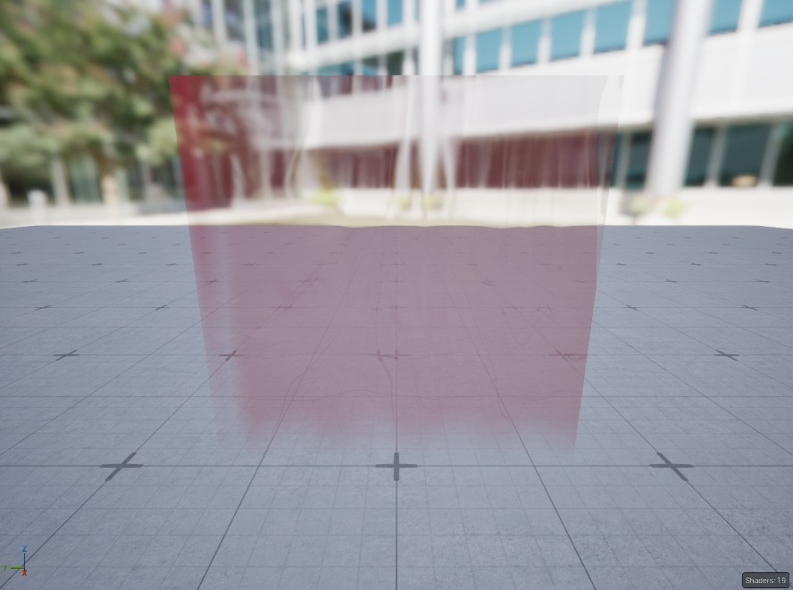
MI_TearPath_Tear_Red in the instance editor preview. Every change updates live with no recompile; the master stays untouched." width="888" height="661" loading="lazy">Rules that keep it safe for a team: tune only in the instance, never the master; make a new instance (MI_TearPath_Tear_<Variant>) for another room; refraction scales down automatically where the film is thin; velocity output stays off because the silhouette reads scene depth. I wrote a team guide with quick recipes (more see-through, redder, calmer, stronger footsteps) so the art director can get a look without opening the graph.
Data lives on the mesh
The shader never guesses where it is. Every tear mesh carries its data in spare UV channels, so the same material works on the path, the waterfall and any water surface an artist models:
UV0Flow direction × speed (world XY). Drives a two-phase flow map, so the pattern always runs downhill.
UV1.x · UV1.yWater depth and steepness. Depth controls coverage, tint and roughness; steepness switches on beads and extra wave strength.
UV2.x · UV2.yShore mask and waterfall mask. Shore drives the soft edge and the silhouette; waterfall turns flow vertical and fades the lower lip.
UV3.x · UV3.yDrip mask and waterfall progress, for ambient drops and the bottom fade.
MPC_TearPath_InteractionContact0–3 = XYZ + time, written by the Blueprint when a foot touches water. The material draws up to four expanding rings.
Headspace Tools: the plugin that produces the data
A shader that depends on baked mesh data is only useful if nobody bakes it by hand. So I wrote Headspace Tools, a project plugin that adds a Tear Path section to Tools and to every actor’s right-click menu. It is pure Python on top of Unreal’s Python scripting and Geometry Script plugins: no C++, nothing to compile or install, so it works for every teammate straight after a Perforce sync.
HeadspaceTools.upluginDeclares the dependencies (PythonScriptPlugin, GeometryScripting) so the editor enables them automatically.
Content/Python/init_unreal.pyRuns on editor start-up and registers the menus.
Content/Python/tearpath_tools.pyThe two tools. Each menu click reloads the module, so fixes reach the team without restarting the editor.
# init_unreal.py runs automatically from the plugin's Content/Python
import tearpath_tools
tearpath_tools.register_menus()
# tearpath_tools.py: each click reloads the module, so fixes land live
_CMD = ("import importlib, tearpath_tools; "
"importlib.reload(tearpath_tools); tearpath_tools.%s()")
_ENTRIES = [
('TearPathBuild', 'Build Tear Path From Spline',
'Select BP_TearPath_Tears, then click...', 'build_selected'),
('TearPathBake', 'Bake Tear Data Onto Mesh',
'Select a Static Mesh Actor...', 'bake_selected'),
]
def register_menus():
menus = unreal.ToolMenus.get()
for menu_name in ('LevelEditor.MainMenu.Tools',
'LevelEditor.ActorContextMenu'):
menu = menus.extend_menu(menu_name)
menu.add_section('TearPath', 'Tear Path')
for name, label, tip, fn in _ENTRIES:
e = unreal.ToolMenuEntry(
name=name, type=unreal.MultiBlockType.MENU_ENTRY)
e.set_label(label); e.set_tool_tip(tip)
e.set_string_command(
unreal.ToolMenuStringCommandType.PYTHON, '', _CMD % fn)
menu.add_menu_entry('TearPath', e)
menus.refresh_all_widgets()
Tool 1 · Build Tear Path From Spline
A level designer edits a spline (point scale Y = local width) and clicks once. In about ten seconds the tool:
- Samples the spline every 10 cm and ray-casts each sample straight down onto the uncarved base ground through a BVH, so rebuilding never digs deeper.
- Solves the water level so it can only run downhill from the first point to the last: a point placed uphill just cuts a deeper channel.
- Carves the ground with a smooth-min into the channel and a smooth-max up into soft levees, then writes the bed mesh.
- Builds the tear-film mesh and writes flow, depth, steepness, shore, drip and waterfall data into UV0–UV3, then snaps the spline onto the new ground.
# Build Tear Path From Spline (excerpt)
# sample every 10 cm; point scale Y = local width
pts = _sample_spline(spline, HW, 10.0)
# always read the UNCARVED base ground, so a rebuild never digs deeper
base_dm = _dm_from_static_mesh(base)
bvh = base_dm.build_bvh_for_mesh() # Geometry Script BVH
def base_height(x, y): # ray straight down
lp = xf.inverse_transform_location(unreal.Vector(x, y, 0))
hit = base_dm.find_nearest_ray_intersection_with_mesh(
bvh, unreal.Vector(lp.x, lp.y, 1e5), down, qopt)
return xf.transform_location(hit.hit_position).z if hit.hit else None
# water level: ground at the centre minus the groove, never climbing
z = [g.bilinear(T, p['x'], p['y']) - groove for p in pts]
for k in range(1, len(z)):
z[k] = min(z[k], z[k - 1]) # uphill point = deeper cut
# carve: smooth-min into the channel, smooth-max up into soft levees
F = smax(smin(t, V, 40.0), lev, 14.0)
# film mesh: every vertex carries the data the material reads
uv0.append((tx * sp, ty * sp)) # flow × speed
uv1.append((clamp(depth / 10.0, -0.3, 1.0), fall)) # depth, steep
uv2.append((clamp(1.0 - rw, 0.0, 1.0), 0.0)) # shore, fall
uv3.append((drip, 0.0)) # drip, progress
Tool 2 · Bake Tear Data Onto Mesh
For water an artist models by hand (a pool, a puddle, a second waterfall), the second tool bakes the same data onto any static mesh, so the material works there too without anyone painting masks:
- Shore: geodesic distance from every vertex to the open boundary, with Dijkstra over the mesh edges.
- Depth: a line trace down from each vertex to whatever is underneath, ignoring the water itself.
- Flow and falls: downhill direction from the vertex normal, blended toward an optional guide spline on flat ground; faces steeper than ~70° become waterfall.
- Non-destructive: writes a
*_TearBakedcopy and assigns the red instance; the original mesh is never touched.
# Bake Tear Data Onto Mesh (excerpt): any water mesh an artist models
# 1. shore: geodesic distance to the open boundary (Dijkstra on edges)
for (u, v), cnt in edges.items():
if cnt == 1: # used by one triangle = edge
for x in (u, v):
dist[x] = 0.0; heapq.heappush(heap, (0.0, x))
while heap:
dcur, u = heapq.heappop(heap)
for v in nbr[u]:
nd = dcur + length(W[u] - W[v])
if nd < dist[v]:
dist[v] = nd; heapq.heappush(heap, (nd, v))
# 2. depth: trace down to whatever is underneath, ignoring the water
hit = unreal.SystemLibrary.line_trace_single(
world, p + up * 0.5, p - up * 400.0, ..., ign, ...)
# 3. flow: downhill from the normal; flat parts follow a guide spline
sl = hor / max(abs(nz), 0.05) # slope
wgt = clamp((sl - 0.05) / 0.3, 0.0, 1.0) # gravity vs spline
fall.append(clamp((sl - 0.38) / 0.35, 0.0, 1.0)) # beads, FallBoost
wf.append(clamp((0.45 - abs(nz)) / 0.2, 0.0, 1.0)) # > ~70° = waterfall
# 4. write a *_TearBaked copy (original untouched), assign the red MI
03Destruction system · Pipeline
Each act of Headspace ends with a memory breaking. Real-time Chaos destruction would give us neither the emotional timing nor the performance we need, so the system is: simulate and direct in Houdini, bake, and play back in Unreal as an ordinary animation.
Houdini Apprentice → Blender → Unreal
I work on a Houdini Apprentice licence, which can’t export the FBX or skinned animation Unreal normally takes from Houdini. Instead of paying for a licence the project doesn’t have, I built the export around what Apprentice can write and let Python and Blender do the rest:
The shared output, a skeletal mesh with one rigidly weighted bone per piece, costs one draw call per material, needs no physics at runtime and can be triggered from any gameplay event. Before building anything I wrote a feasibility study deciding, per act, how much Houdini each one needed:
Act 1 · Mia screenGlass fracture with directed timing → baked skeletal animation. Built.
Act 2 · Piano stairWhole keys, choreographed collapse → baked skeletal animation, plus dissolve, lighting zone and per-step notes. Built.
Act 3 · Many screensReuse Act 1 breakups with staggered timing → rigid-body VAT after a performance test. In progress.
04Destruction · The breaking screen
An LED wall reads "MIA". Mia recognises herself, a hit lands on the I, cracks race outward and the screen collapses to the floor, opening onto the next memory. 64 shards, 120 frames at 24 fps. The challenge here was believable glass that still hits a story beat.
Houdini: a real simulation, directed by timing
- Prep. Import the 160 × 90 cm panel, convert to metres, keep per-face UVs, weld it into a watertight slab so it can be cut.
- Fracture. RBD Material Fracture in glass mode: radial cracks from the centre of “MIA”, 64 flat panes.
- Release wave. Every shard starts frozen (
active = 0). A wrangle gives each one a release time: 1.45 s + 1.6 s per metre from the impact, plus 0.12 s jitter, so the crack front travels outward. - Impact. A hidden sphere punches through the “I” from behind at 1.45 s. A moving collider delivers the hit physically, because frozen shards lose any initial velocity.
- Solve. RBD Bullet Solver, 20 substeps, glass density 2500 kg/m³, bounce 0.3, friction 0.6, ground 1 m below the screen centre.
Keyframed shards looked fakeFirst version moved pieces with VEX. Replaced with the Bullet sim, keeping direction through timing only.
Glue didn't hold the panelGlue binds pieces to each other, not to the world, so the panel fell as one. Switched to timed activation.
Shards exploded on frame 1Bullet’s default 2 cm padding and hull shrink are more than half the 1 cm glass. Set both to 0.5 mm.
The housing ejected the glassAs a collider it became one convex hull around the glass. Removed it, so the whole screen falls.
Screen-specific export fixes
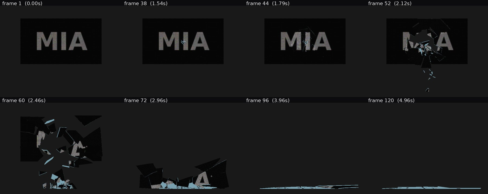
Frame-accurate check. Front views rendered straight from the exported file at eight frames; every shard matches Houdini to within 0.001 mm." width="1800" height="717" loading="lazy">Two problems were particular to an image on glass: Houdini’s clockwise winding made the screen look inside-out after export, and the fracture’s edge noise slid the image up to 7 % along the cracks. The converter reverses the winding and re-projects front UVs from position, so the swap from intact to broken is seamless.
Material and VFX: one mask, four jobs
The crack mask is generated from the real shard outlines, so the cracks drawn on the intact screen are exactly where it later separates. M_MiaScreen_LED reads it in one custom HLSL node:
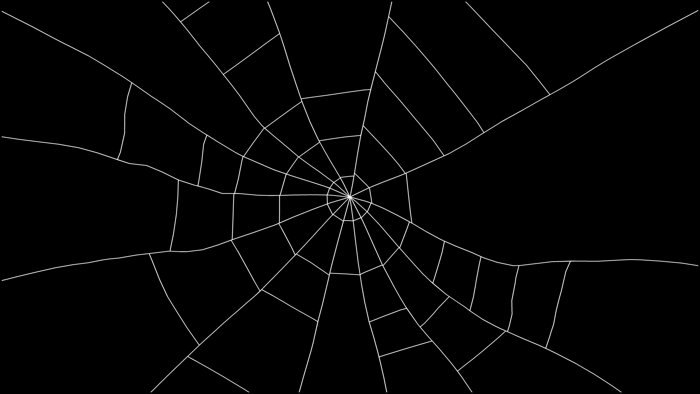
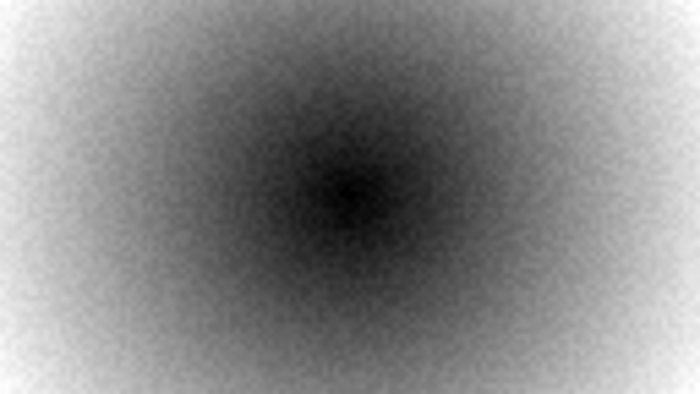
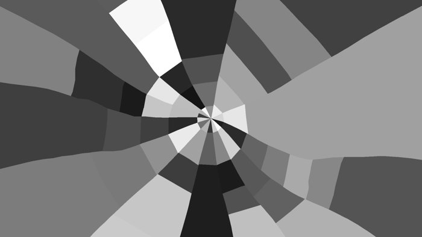
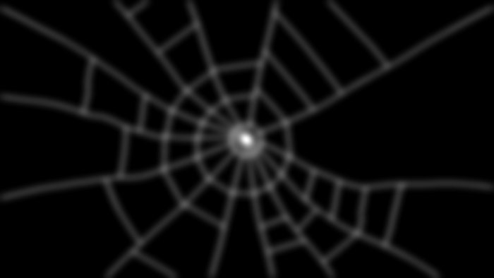
The whole event runs from one Blueprint call, StartShatter, so design can trigger it from any gameplay moment. I built a showroom with both variants side by side so the team could compare and vote.
05Destruction · The impossible piano
At the turn from Act 2 to Act 3, Mia climbs an inescapable staircase made of piano keys. Every step plays a note. When she reaches the top, her fear peaks and the whole structure bursts apart and dissolves into white: from darkness into nothingness. The challenge here was the opposite of the screen: a collapse that follows music and emotion, not gravity.
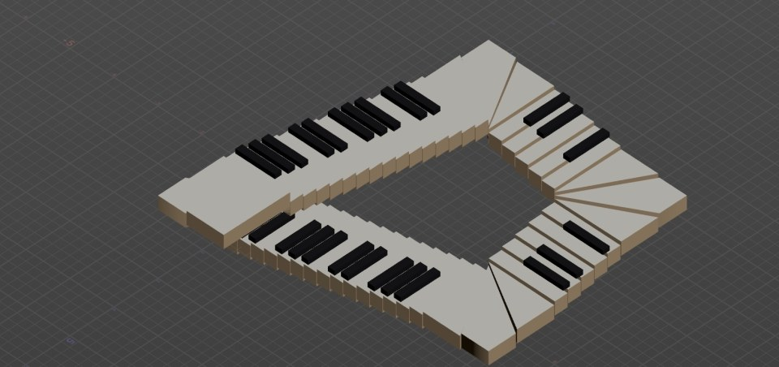
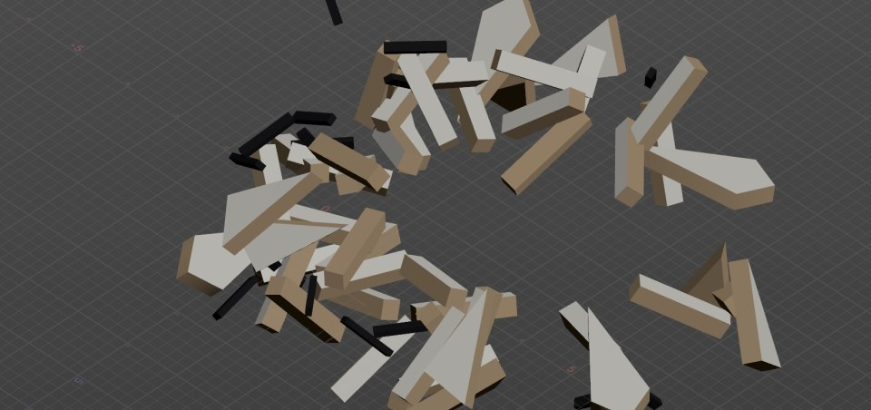
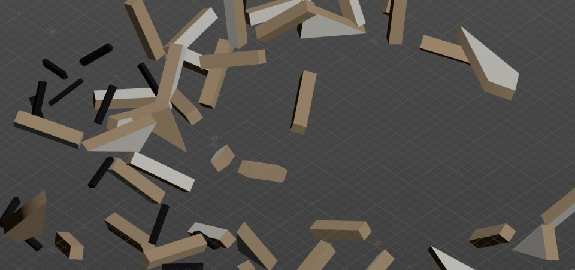
Designing an impossible space you can walk on
Impossible loopFour flights of 15 / 5 / 5 / 15 keys joined by three-key fan corners: 52 steps, no landings, no flat areas. Every step goes up, yet the loop closes on itself – but only from the presentation camera, a long lens (FOV 7.5) lined up with the closure gap.
Real keysReal piano proportions and materials: ivory tops on wooden bodies, ebony black keys lying on top in the real C-based pattern, so the stair is literally a keyboard. Mood comes from lighting, not from the mesh colour.
Whole keys onlyKeys never fragment; white and black keys break away as complete pieces. It reads clearer and keeps the cost low.
Built to scaleModelled at real key size in Houdini (7 cm rise, 30 cm tread, 1.5 m long) and scaled 2.5× in Unreal, so each key is exactly one stair step for a 165 cm character.
Houdini: procedural build, choreographed motion
Everything lives in one geometry network. A Python SOP generates the loop (white keys with ivory tops and wood bodies, black keys on top), each key becomes one packed piece tagged with its piece, step and white/black flag, and a single wrangle animates all of them:
// Point wrangle on the packed keys. One point = one key piece.
// Four beats, all driven by time and each key's distance from Mia.
float d = length(P0 - mia);
float tb = chf("peak") + d * chf("peak_spread") // release wave spreads from Mia
- isblack * chf("black_lead") // black keys break first
+ (rand(key * 7 + 1) - 0.5) * 0.06; // small per-key jitter
float tc = min(T, tb); // pre-release effects freeze at release
// 1. Melody: keys press down in order along the stair, like a phrase being played
float tn = chf("melody_start") + chf("melody_len") * u * (1.3 - 0.3 * u);
press = sin(a / 0.35 * PI) * (a < 0.08 ? 1 : exp(-(a - 0.08) * 6));
// 2. Dread: the structure rattles, black keys hop, everything contracts toward Mia
off += (noise(tc * 23, key) - 0.5) * 2 * chf("rattle") * dr2;
off += (mia - P0) * chf("contract") * dr2;
// 3 + 4. Burst away from Mia, then motion drains with exponential drag,
// so the collapse reads as time slowing down rather than falling
disp = dir * (spd * (1 - exp(-k * s)) / k + chf("drift") * s);
rotate(Rb, w * (1 - exp(-kw * s)) / kw, wax);
The motion is closed-form: each key’s position is computed directly from time, so there is no simulation cache, it is fully repeatable, and it can be timed to the music with a handful of named controls (peak, speed, drag, spin, drift, lift).
Wood fracture ran out of memoryFracturing every key pushed the laptop past 96 % memory. Switched to whole keys and closed-form motion: no cache at all.
The stairs didn't look impossibleEarly versions read as an ordinary staircase with landings. Removed every flat area and lined the camera up with the closure gap.
The burst was too uniformA single outward push read as a plain explosion. Added the dread build-up, per-key speed and spin, the black-key lead and the drag fall-off, so the peak feels like panic and the end feels empty.
Export: data for the material, not just motion
The piano leaves Houdini through the shared pipeline: 78 keys become 78 rigidly weighted bones and one baked animation, checked against Houdini to within 0.005 mm. On top of that, vertex colour carries per-key data for the shader – R = release time, G = random, B = step, A = black key – the same "data lives on the mesh" idea as the tear path.
Unreal: dissolve, light and sound from one call
BP_PianoCollapse works out which step the player is on from their height above the piano, and calls StartCollapse when they reach the top key. That one function swaps the walkable intact mesh for the animated one and drives everything else:
// M_PianoKey · KeyDissolve (custom node). Each key breaks into light at its own moment. // VC.r = release time / 10 s, VC.g = per-key random, both baked into vertex colour on export. float rel = VC.r * 10.0; float start = rel + Delay + VC.g * Spread; // DissolveDelay, DissolveSpread float k = saturate((T - start) / max(Len, 0.01)); // T = CollapseTime from the Blueprint // blocky world-space noise, so keys crumble in chunks instead of fading float3 p = floor(WP * 0.06); float n = frac(sin(dot(p, float3(12.9898, 78.233, 37.719))) * 43758.5453); float mask = (n >= k) ? 1.0 : 0.0; // opacity mask float edge = saturate(1.0 - abs(n - k) * 6.0) * step(0.0001, k); // glowing rim x EdgeGlow return float4(mask, edge, k, 0);
A self-contained lighting zone. A box around the piano holds two bounded post-process volumes: PP_Dark (low exposure, desaturated, cold, vignette) and PP_White, which waits at weight 0 until the collapse. A moonlight spot and a soft fill light the keys. Because both volumes only work inside the box, the piano can sit in any level without changing the rest of it.
Every step is a note. The 52 white steps are the 52 white keys of a real piano, from A0 at the bottom to C8 at the top; standing on a black key plays its sharp. Notes play one at a time in order, so running up the stair becomes a fast run instead of skipped notes, and walking down plays the scale downward. For the prototype I synthesised all 88 notes in Python (three slightly detuned strings, inharmonic overtones, hammer noise, room reverb) and rendered the collapse cue in sync with the animation.
TopStep · 51The step that triggers the collapse (the 52nd white key).
NoteInterval · 0.17 sMinimum time between step notes; faster climbing catches up as a run.
PeakTime · 4.3 sWhen the ash fires; matches the animation.
WhiteStart · WhiteDuration5.4 s and 3.5 s: when and how fast the world fades to white.
DissolveDelay · Spread · Len2.4 s, 2 s and 0.9 s on the material: when keys start to crumble and how staggered it is.
Design can call StartCollapse from any story event instead of the climb, and ResetPiano puts everything back for testing.
06Challenges & solutions
Liquid without a fluid sim
The tears had to flow, bead, fall and react to footsteps in real time on a student-project budget.
Shading driven by baked mesh data
Flow, depth, steepness and masks are baked into UV channels; a translucent Substrate material animates them. Footsteps are four contacts in a parameter collection.
Other people have to use it
A material that needs hand-baked data is a trap for a 14-person team working through Perforce.
Master / instance contract, tools and a guide
Logic in one master, look in grouped instance parameters with one main knob each, two one-click tools, and a written guide with quick recipes.
No FBX from Houdini Apprentice
The licence can’t export the skinned animation Unreal expects.
OBJ + JSON → Python → Blender → Unreal
Export what Apprentice allows, build the rig in Python, bridge through Blender, verify to 0.001 mm before import.
An impossible space you can walk on
A Penrose staircase only works from one viewpoint, but players climb it in first person at real scale.
Design for one camera, build for the body
No landings or flat areas, a long-lens camera on the closure gap, and keys built at real size and scaled so one key is one step.
Directed timing vs. real physics
Keyframed glass looked fake; a free simulation ignored the story beat.
Timed activation, or pure choreography
The screen uses a release wave plus a hidden impactor inside a Bullet sim; the piano skips physics: closed-form VEX motion, a vertex-colour-driven dissolve and timed post-process.